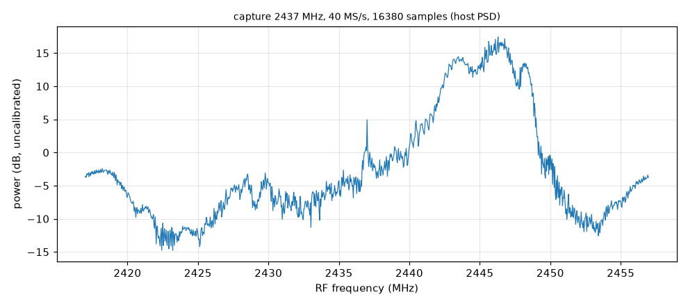
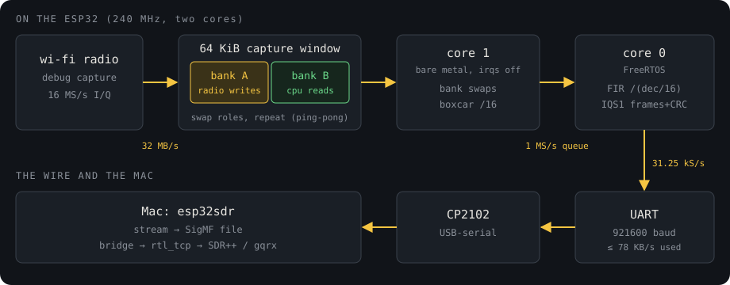
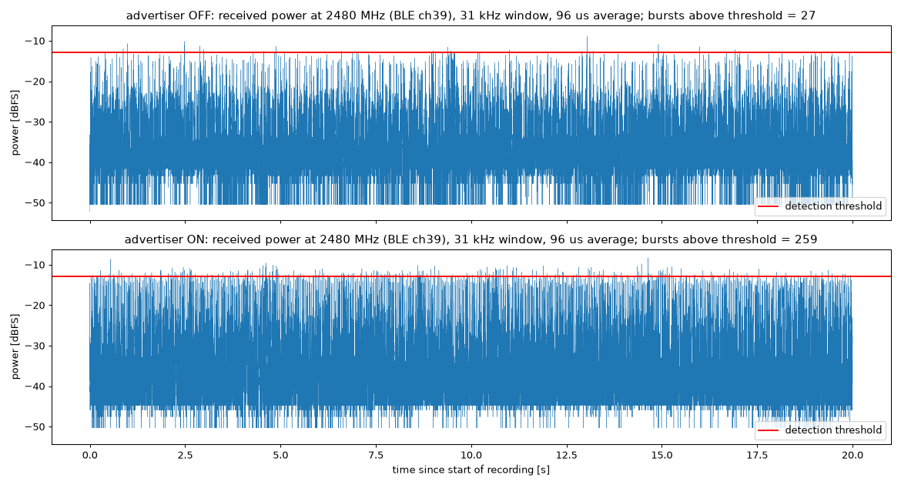
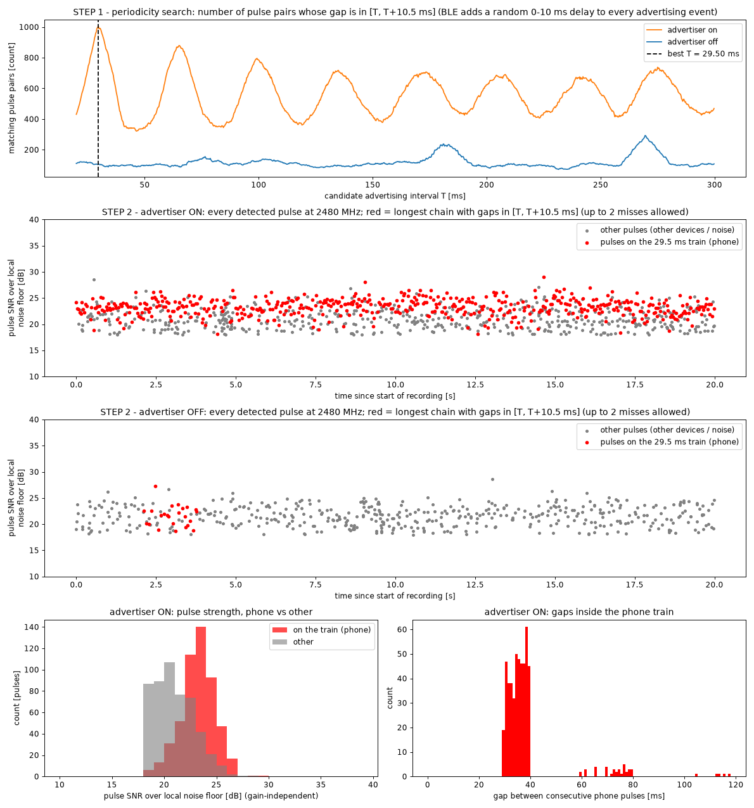
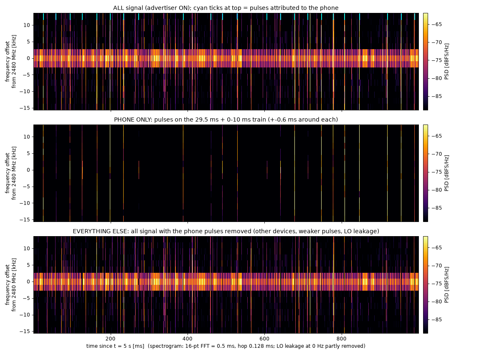
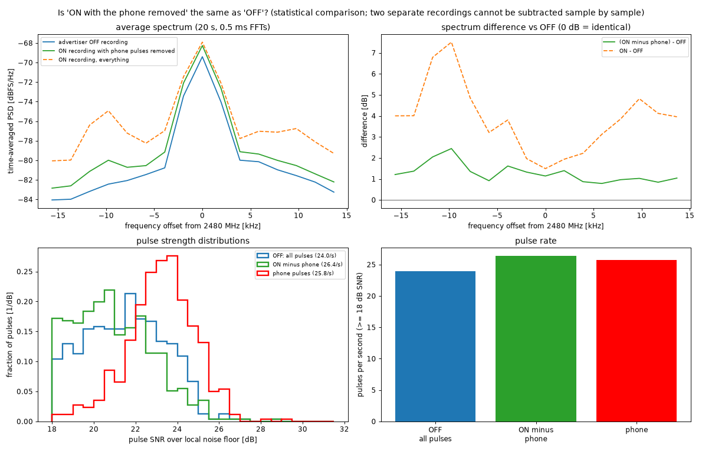
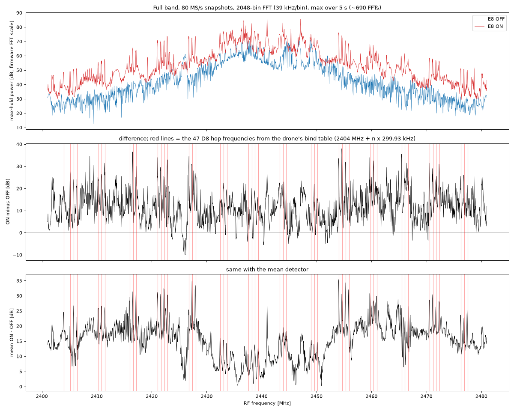
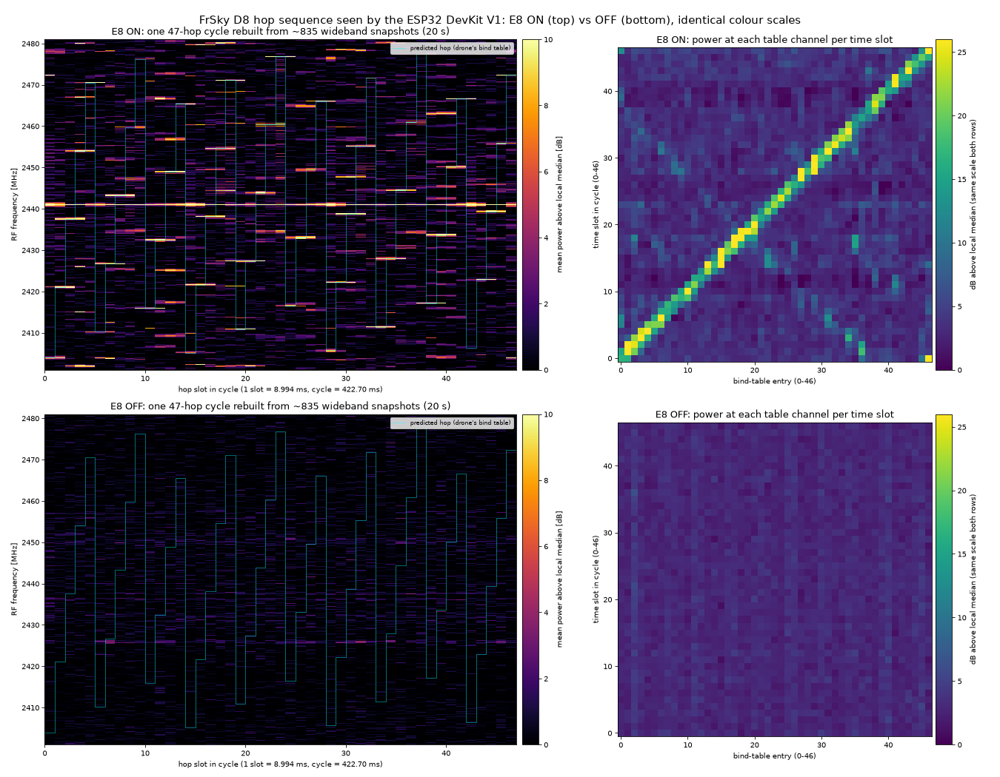

I wanted to see whether a classic ESP32 DevKit V1, the cheap board with a CP2102 USB-serial chip, could work as a 2.4 GHz software-defined receiver. I built one on the I/Q capture path that esp-sdr found in the chip, got it streaming without gaps over the board's slow serial link, and tried it on Wi-Fi, Bluetooth LE advertising and a FrSky D8 RC transmitter. Everything here is receive-only.
The capture path
The ESP32's Wi-Fi radio has an undocumented debug feature that copies raw I/Q samples from the receiver into RAM. ESPARGOS figured out how to drive it and wrapped it in firmware with a small serial protocol (tune, capture, spectrum). My project is a fork of theirs.
The capture window is 64 KiB of SRAM. The radio fills it with 16380 I/Q samples at 16, 40 or 80 MS/s and stops, so one capture is about 1 ms of signal at 16 MS/s, or 205 µs at 80. esp-sdr already supported the classic ESP32, but it expected a faster serial link than my board has.
Build profile and 921600 baud
The CP2102 tops out at 921600 baud. Asked for 2 Mbaud, as in the stock build, the board just never replies, which took me a while to work out. So I added a build profile, esp32-devkitv1, with the UART at 921600.
. ~/esp/esp-idf/export.sh
idf.py -B build-esp32-devkitv1 -DIDF_TARGET=esp32 \
-DSDKCONFIG_DEFAULTS=sdkconfig.defaults.esp32-devkitv1 build
idf.py -B build-esp32-devkitv1 -p /dev/cu.usbserial-0001 -b 921600 flashAfter a reset the ROM bootloader logs at 115200 baud, which at 921600 reads as 0x00 and 0x80 bytes, so I wait about 3 seconds before talking to the board.
On the Mac, a small Python package, esp32sdr, handles info, tune, capture and spectrum and saves SigMF. Its first version dropped bytes because it set pyserial's timeout before every read; opening the port once with a fixed timeout and reading in bulk fixed it.
$ esp32sdr capture --freq 2437 --rate 40 --n 16380 -o ch6 --psd ch6.png
captured 16380 samples at 40 MS/s, 2437 MHz, 8-bit, CRC ok, 0.36 s -> ch6.sigmf-data
peak 2446.297 MHz 17.4 dB, median -5.1 dB (DC ±0.2 MHz excluded)
350 captures back to back, at all three rates and in 8 and 10 bits, gave no CRC failures, resets or hangs.
The UART bottleneck
Each capture is 32,760 bytes, which takes about 355 ms to send at 921600 baud. You get 1 ms of radio, then you're deaf for a third of a second, which is no good for something like a phone sending a packet every 30 ms.
921600 baud is 92,160 bytes a second; with 15% headroom, about 78 KB/s. The radio at 16 MS/s with 8-bit I and Q makes 32 MB/s. To stream without gaps, the chip has to filter and throw away almost all of it; decimating by 512 gives 31.25 kS/s, or 62.5 KB/s at 8 bits.
| mode | bandwidth | gaps |
|---|---|---|
| burst | 16–80 MHz | ~1 ms of radio, then ~355 ms blind |
| stream | 15.6–62.5 kHz | none |
Burst mode already worked. Streaming didn't exist on this chip yet.
Continuous capture on the classic ESP32
To stream, the radio has to keep writing while the CPU reads. esp-sdr does that on the ESP32-S3, but I hadn't seen it done on the classic ESP32, so I first added probe commands and tried the registers one at a time.
The window can loop. One control bit makes the writer wrap around the buffer instead of stopping. In 1 ms the write pointer wrapped 4, 2 and 0 times at 80, 40 and 16 MS/s, as the rates predict.
The window is two banks. It's two 32 KiB halves, and MAC_DUMP_MODE in DPORT decides which one the radio owns: mode 2 the lower, mode 1 the upper. If the CPU reads the radio's half it gets the constant 0xa55aa55a, but it can read the other half normally.
That allows ping-pong buffering: the radio writes bank A while the CPU reads bank B, then they swap. My first version swapped when the pointer wrapped and lost a few samples per swap, 0.21 per 8192 on average at 16 MS/s and never more than 7 at 80 MS/s. Each was counted, because unwritten positions keep a sentinel pattern. The final firmware swaps on a fixed schedule a little before each lap ends, and in normal running loses nothing.
The CPU is fast enough. The build runs FreeRTOS on one core, so I run the second core bare-metal: no RTOS, interrupts off, code in IRAM. A decimate-by-16 boxcar costs 5.37 cycles per I/Q pair at 240 MHz, 36% of the core at 16 MS/s.
What surprised me is that reading one bank while the radio writes the other is about twice as slow, around 10 cycles a pair instead of 6. So core 1 only swaps banks and runs the cheap boxcar, and the real filter runs on core 0.

Core 0 runs a Kaiser-windowed FIR that decimates by the rest (dec/16, up to 256 taps), rounds to 4, 8 or 16 bits, and packs samples into IQS1 frames: a 24-byte header, up to 1024 bytes of samples, and a CRC32. Each frame carries the index of its first sample, so any loss shows up exactly.
Streaming over UART
$ esp32sdr stream --freq 2402 --dec 512 --bits 8 --seconds 60 -o ble- 1,874,990 samples (31,250 a second for 60 s) in 3663 frames
- 0 bad CRCs, 0 sequence gaps
- 0 lost samples, and the firmware's own count agrees
That's about 960 million radio samples filtered and decimated without a gap. The link only has room for some settings, and the firmware refuses the rest before touching the radio:
| bits | dec 256 (62.5 kS/s) | dec 512 (31.25 kS/s) | dec 1024 (15.6 kS/s) |
|---|---|---|---|
| 4 | yes (70% of link) | yes (35%) | yes (17%) |
| 8 | no (139%) | yes (70%) | yes (35%) |
| 16 | no | no (139%) | yes (70%) |
Live view in SDR++
I wanted a waterfall. esp32sdr bridge speaks rtl_tcp, the protocol RTL-SDR dongles use, so ordinary SDR programs can connect, and it retunes the board when they ask. For SDR++ there's one command:
esp32sdr sdrpp # defaults: --freq 2480 --dec 512 --bits 8It reconfigures and launches SDR++ and presses play through its rigctl server. SDR++'s rtl_tcp source won't go below 250 kS/s, so the bridge interpolates 8× and SDR++ decimates back to the real 31.25 kHz. You can retune from a terminal:
printf 'F 2402000000\n' | nc 127.0.0.1 4532gqrx works too, awkwardly: it only tunes what a real RTL-SDR can (24–1766 MHz), so I run bridge --offset-mhz 2000 and set an LNB LO of 2000 MHz in gqrx.
One bug to watch for: when the client stops reading (gqrx with its DSP off), a blocking socket write stalls the serial reader, the USB-serial buffer overflows, and frames arrive cut short. The socket now has its own writer thread, and a slow client's blocks are dropped and counted instead. A 2.5-minute SDR++ session with retunes lost 0 samples and dropped 0 blocks.
Bluetooth advertising at 2480 MHz
The first real test was BLE advertising channel 39, at 2480 MHz above Wi-Fi. I put an iPhone running nRF Connect's advertiser on top of the board and recorded 20 s with it off and 20 s with it on (dec 512, 8-bit, no samples lost). The stream sees 31 kHz of the 1 MHz channel: not enough to decode, but enough to see energy.
With a threshold set from the off run, I counted 27 bursts with the advertiser off and 259 with it on, about ten times more.

Other devices in the room advertise too, so I wanted to pick out the phone. A BLE device advertises every advInterval plus a random 0–10 ms advDelay. For each candidate interval T, I counted pulse pairs whose gap falls between T and T + 10.5 ms. The on run has a sharp peak at T = 29.5 ms, with harmonics; the off run has nothing there.
Then I looked for the longest train of pulses where each gap is T plus up to 10 ms. In the on run, 515 of 1026 pulses form one train spanning 19.6 s, 89% of the events you'd expect. In the off run only 24 pulses (4%) chain up by chance. The train pulses are also stronger (median SNR 23.3 dB against 20.7 dB for the rest), which makes sense for a phone lying on the board.


As a check, I removed the phone's pulses from the on recording and compared the rest with the off recording. The spectrum difference fell from up to 7.5 dB to about 1–2.5 dB, and the pulse rate (26.4/s) came out close to the off run's 24.0/s.

FrSky D8 hop sequence
Next I tried the FrSky D8 link from an EMAX E8 RC transmitter, which hops across 47 channels about every 9 ms. The drone's receiver has to follow the same hops, so its Betaflight backup has a frsky_spi_bind_hop_data line with 47 entries, and with Betaflight's CC2500 settings, channel n is at 2404.000 MHz + n × 299.93 kHz. The modulation is GFSK at about 31 kbaud, ±31.7 kHz deviation. The drone was off and the transmitter 0.5–1 m from the board.
Where it transmits. I took a full-band max-hold with the on-chip spectrum (80 MS/s, 2048 bins of 39 kHz, 5 s), transmitter on and off. To stay independent of the AGC, I measured each peak above its local median. The 47 table channels average +10.8 dB; the 199 unused channels on the same grid average −0.1 dB. With the transmitter off, both are +0.1 dB.

When it transmits. Each on-chip spectrum frame comes from one short capture, well under a millisecond, and the firmware timestamps it. In 20 s I got 835 frames about 24 ms apart, slower than the hopping. But the sequence repeats, so if you fold each timestamp by the cycle length, the way a strobe light freezes a spinning wheel, every snapshot lands in some slot of one cycle.
Searching over cycle lengths, the best fit was 422.70 ms = 47 × 8.994 ms. Then for each slot I checked which table channel had the energy.

Slot k lights up table entry k, which shows as a diagonal. The matched score is 23.4 dB against 4.5 ± 0.2 dB for random slot assignments (z ≈ 89); with the transmitter off it's 3.1 against 2.9 ± 0.1. So although the board samples far too slowly to follow a single hop, it recovered the hop order.
What's next
I'd like to decode the D8 packets. At dec 256 and 4 bits the stream is 62.5 kS/s, which is 2 samples per bit at 31 kbaud, with the ±31.7 kHz deviation right at the filter's edge. If that isn't enough, the fallback is an FM-discriminator mode in the firmware: demodulate on the chip, where the bandwidth still exists, and send only the result over the UART.
I also haven't checked phase continuity across a bank swap with a known tone. The sample counts say nothing is missing; a clean CW tone through a swap would show nothing is out of place.
Reproducing it
You need an ESP32 DevKit V1 (CP2102), a Mac or Linux machine, ESP-IDF at commit 25fe69f946311abdaf9ad56591f25fedbc20ac98 in ~/esp/esp-idf, and Python 3.11+.
git clone --recursive https://github.com/mb6611/esp32-devkitv1-sdr
cd esp32-devkitv1-sdr
# firmware
. ~/esp/esp-idf/export.sh
idf.py -B build-esp32-devkitv1 -DIDF_TARGET=esp32 \
-DSDKCONFIG_DEFAULTS=sdkconfig.defaults.esp32-devkitv1 build
idf.py -B build-esp32-devkitv1 -p /dev/cu.usbserial-0001 -b 921600 flash
# host tools
cd host && python3 -m venv .venv && . .venv/bin/activate && pip install -e .[dev,plot]
esp32sdr info # expect TRANSPORT UART 921600
esp32sdr capture --freq 2437 --rate 40 --n 16380 -o ch6 --psd ch6.png
esp32sdr stream --freq 2402 --dec 512 --bits 8 --seconds 60 -o ble
esp32sdr sdrpp # live waterfall at 2480 MHz
# the bluetooth test: phone advertiser off, then on
esp32sdr stream --freq 2480 --dec 512 --bits 8 --seconds 20 -o /tmp/ble/off
esp32sdr stream --freq 2480 --dec 512 --bits 8 --seconds 20 -o /tmp/ble/on--port defaults to /dev/cu.usbserial-0001. The analysis scripts (numpy, scipy, matplotlib; reading from /tmp/ble and /tmp/d8) are in docs/devkitv1/bench/: ble-onoff/analyze.py and isolate.py for Bluetooth, d8/maxhold.py, strobe.py, strobe2.py and sbs.py for D8. Full numbers are in bench-results.md, register probes in ring-feasibility.md, the link budget in iq-stream-uart.md and viewer setup in live-view.md.
Built on esp-sdr by ESPARGOS. GPL-3.0-or-later; see NOTICE.md.